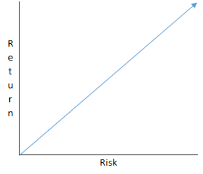

Why Julia, Why Now?
Programming is a diverse field! You have people from all around the world, tackling every sort of problem imaginable with their computers. From web-developers, to mobile app creators, from legacy code maintainers, to scientific computing mathematicians, many people need different features and different languages.
Julia is a relatively young language, released in 2012, and was designed to meet the high-performance needs of numerical and scientific programming; while being a general-purpose programming language. Depending on what you are looking to build now or in the future Julia may just be the language for you!
Nassim Taleb and Julia
For those of you who don’t know who Nassim Taleb is just bear with me for a minute on this tangent.
But really if you haven’t heard of him you should check out some of his work Wikipedia - Nassim Taleb.
One of Nassim Taleb’s areas of expertise is in the field of risk management, and if you are going to undertake the commitment of learning a new programming language you should think a little bit about risk. While I do believe that you can’t really choose a wrong programming language, depending on what you are trying to get your computer to do, some languages will make this task easier or at least more intuitive. Nassim Taleb often discusses a risk management technique he calls “the barbell strategy”. The barbell strategy was initially applied to investments. Many of you are probably familiar with a graph that looks like the following:

Many investors in search of a higher return, choose to be somewhere in the middle. They underestimate their risk exposure and end up going bust!
The barbell strategy suggests, putting what you need at the left side of the chart, where you get a small and safe return. Then to increase your risk exposure, put some assets to the far right, where they may get a large return, but if you lose them you will not be broke. You get the potential for some large returns on a portion of your assets, while you keep the assets you need safe.
Umm… I Thought We Were Talking About Julia?
Yes! So my main programming language is C#. I consider C# to be a safe language with plenty of demand and a solid future (JavaScript would be another great example). With this in mind, I can invest time into learning Julia, with the goal of expanding my data science and numerical programming abilities. Sure there is R, or Python, or Scala, or some others, but I have decided that Julia offers a great potential (return) and that now is a great time to start learning it. As Julia continues to grow and if it does become the language for specific applications, I will have years of experience at that time.
If you want to become a software developer today, should Julia be your first language? It is fairly safe to say no. BUT on the condition that you can handle most the programming challenges in your field already with a language that lets you share and work on code with others, then Julia would be a great skill to add to your toolkit!
Stay tuned for more about getting started with Julia and my experience so far.
Thanks for reading,
Thomas